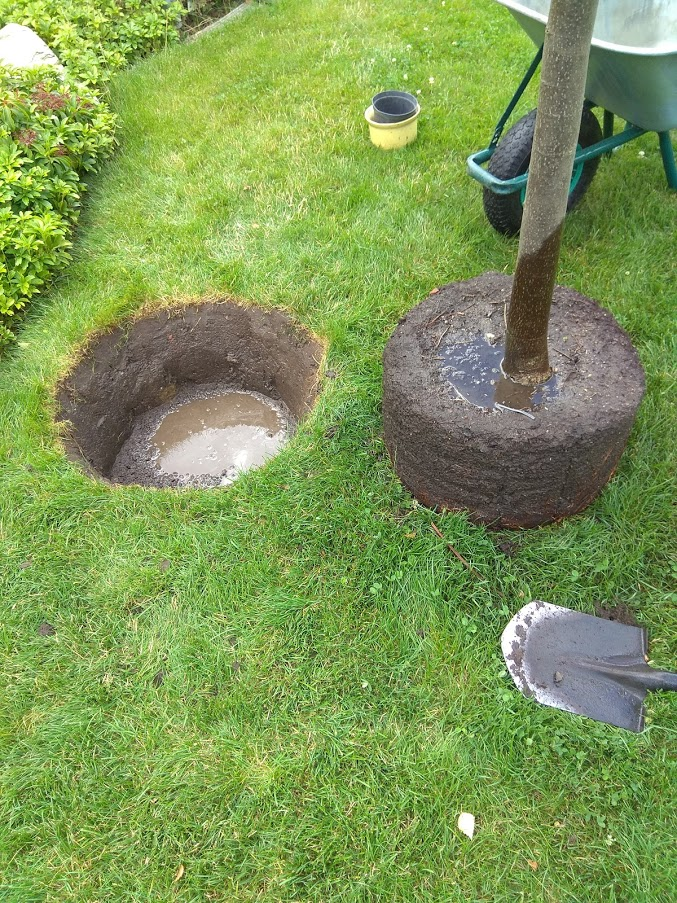
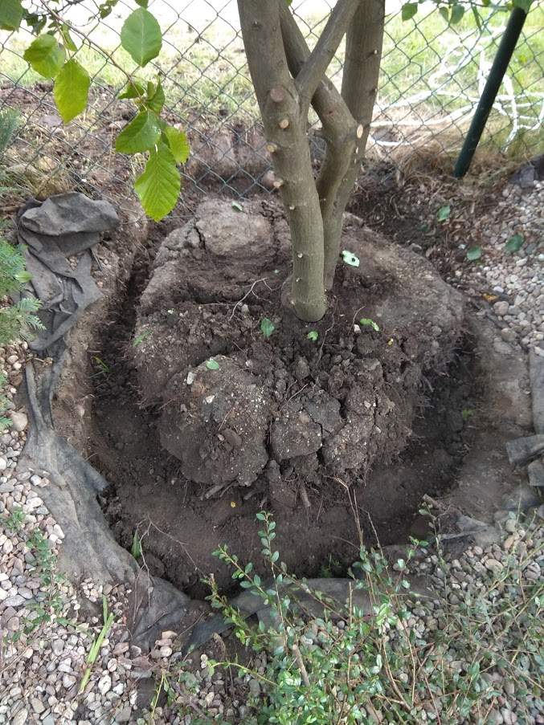
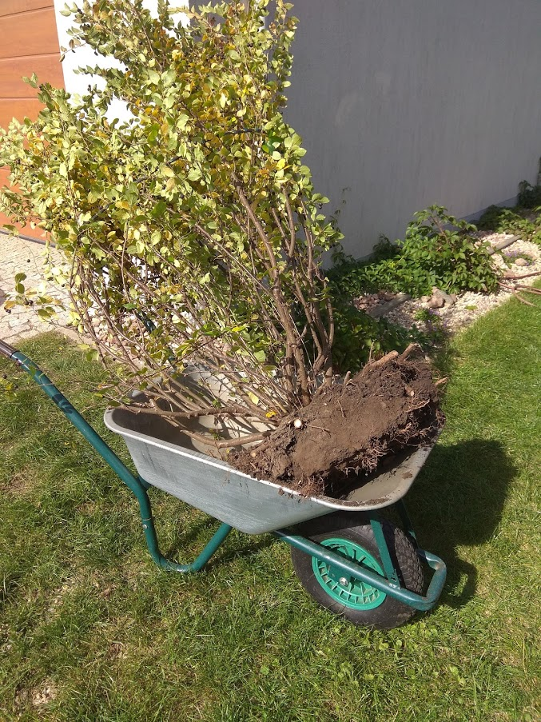
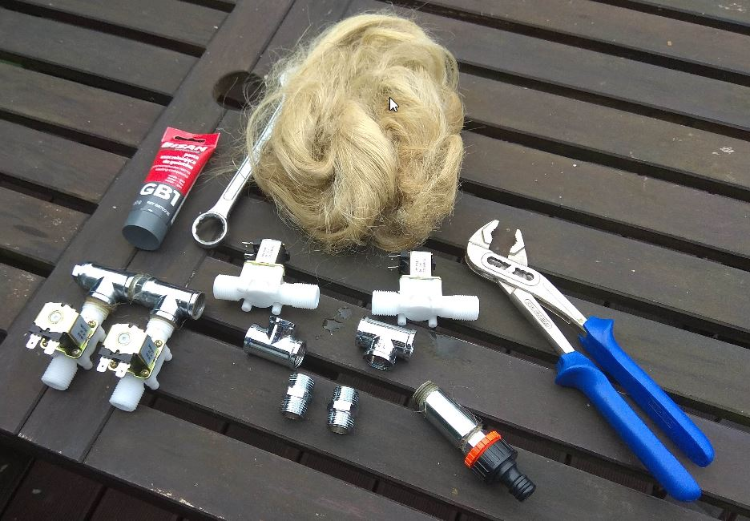
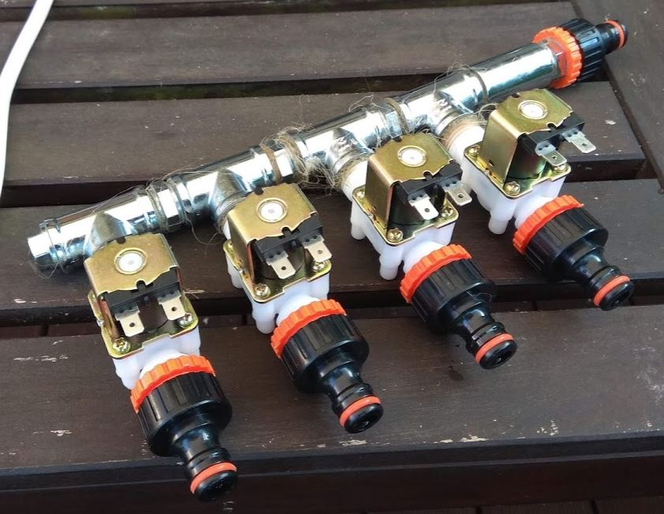
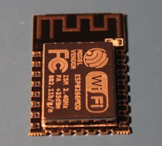
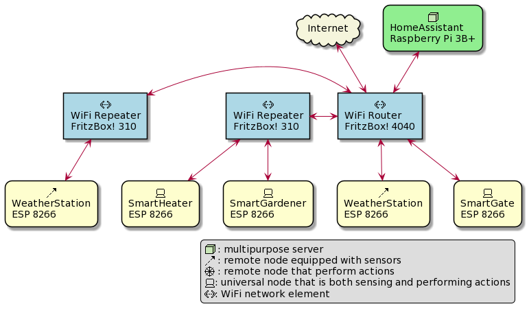
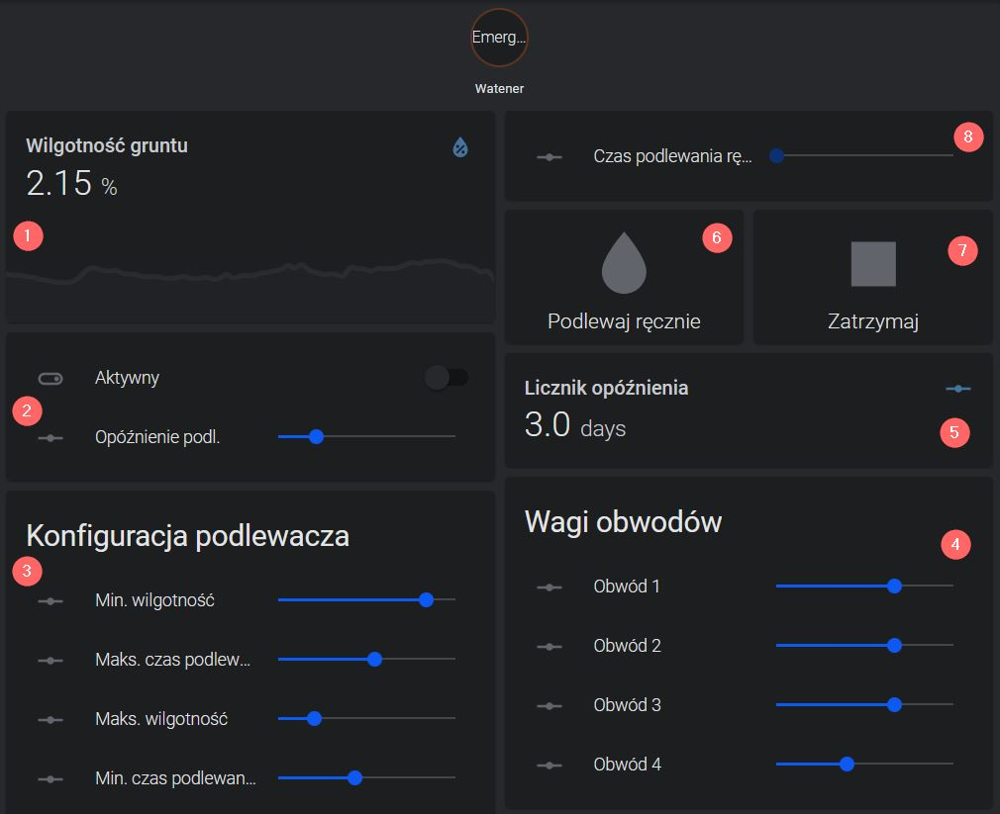

Smart Gardener
with ESP8266, HomeAssistant and RPi3
Maciej Małecki
Motivation



Hardware: the hydraulics

- operating voltage: 12V
- current: 0.6A
- power: 8W
- max. pressure: 0.8MPa
- cost: ~25PLN


ESP 8266

- powerful RISC CPU: 80-160MHz
- flash memory: 512KiB - 16MiB
- onboard WiFi
- 2-10 GPIO or more
- 1 ADC
- damn cheap 🧅🧅🧅
ESP Easy - implementation
on listener#valveCmd do
if [listener#valveCmd]<=0
TimerSet,1,0
TimerSet,2,0
TimerSet,3,0
TimerSet,4,0
GPIO,5,0
GPIO,4,0
GPIO,14,0
GPIO,12,0
Publish,"Podlewacz/valve/state", 0
Publish,"Podlewacz/state","Emergency shut-off"
else
if [listener#valveCmd]<2600
TaskValueSet,3,1,[listener#valveCmd]*[adjustment#valve1]
TaskValueSet,3,2,[listener#valveCmd]*[adjustment#valve2]
TaskValueSet,3,3,[listener#valveCmd]*[adjustment#valve3]
TaskValueSet,3,4,[listener#valveCmd]*[adjustment#valve4]
Publish,"Podlewacz/valve/state", 1
if [valves0#valve1]>=1
GPIO,5,1
Publish,"Podlewacz/state","Valve 1 open"
if [valves0#valve1]<2400
TimerSet,1,[valves0#valve1]
else
TimerSet,1,2400
endif
else
Publish,"Podlewacz/state","Valve 1 skipped"
TimerSet,1,3
endif
endif
endif
endon
on Rules#Timer=1 do
GPIO,5,0
if [valves0#valve2]>=1
GPIO,4,1
Publish,"Podlewacz/state","Valve 2 open"
if [valves0#valve2]<2400
TimerSet,2,[valves0#valve2]
else
TimerSet,2,2400
endif
else
Publish,"Podlewacz/state","Valve 2 skipped"
TimerSet,2,3
endif
endon
on Rules#Timer=2 do
GPIO,4,0
if [valves0#valve3]>=1
GPIO,14,1
Publish,"Podlewacz/state","Valve 3 open"
if [valves0#valve3]<2400
TimerSet,3,[valves0#valve3]
else
TimerSet,3,2400
endif
else
Publish,"Podlewacz/state","Valve 3 skipped"
TimerSet,3,3
endif
endon
on Rules#Timer=3 do
GPIO,14,0
if [valves0#valve4]>=1
GPIO,12,1
Publish,"Podlewacz/state","Valve 4 open"
if [valves0#valve4]<2400
TimerSet,4,[valves0#valve4]
else
TimerSet,4,2400
endif
else
Publish,"Podlewacz/state","Valve 4 skipped"
TimerSet,4,3
endif
endon
on Rules#Timer=4 do
GPIO,12,0
Publish,"Podlewacz/valve/state",0
Publish,"Podlewacz/state","Idle"
endon
Architecture with Home Assistant and MQTT


- Soil humidity indicator.
- Automatic mode configuration.
- Watering "curve" configuration.
- Valve weighting.
- "Hysteresis" status.
- Manual watering trigger.
- Emergency shut down trigger..
- Manual watering time slider.
Time depends on humidity
given input parameters:
\[ t_{min}, t_{max}, h_{min}, h_{max} \]then we have:
\[ t = \left\{ \begin{array}{ll} 0, & h > h_{max} \\ t_{max}, & h < h_{min} \\ \frac{t_{max} - t_{min}}{h_{max} - h_{min}} (h_{min} - h) + t_{min}, & h_{min} <= h <= h_{max} \end{array} \right. \]
\[ \begin{array}{ll}
t_{min} = 0 & t_{max} = 45 \\
h_{min} = 20 & h_{max} = 80 \\
\end{array}
\]
automation:
- alias: "Smart gardener checks for condition once per day"
trigger:
platform: time
at: "03:00:00"
action:
service: script.evaluate_watering_time
script:
evaluate_watering_time:
sequence:
- condition: state
entity_id: 'input_boolean.watering_enable'
state: 'on'
- condition: numeric_state
entity_id: 'input_number.watering_delay_counter'
below: 1
- service: system_log.write
data_template:
message: >
Running the script
{{ states('sensor.wilgotnosc_gruntu') | float }},
{{ states('input_number.watering_off_threshold') | float }}
level: debug
logger: homeassistant.podlewacz
- service: mqtt.publish
data:
topic: Podlewacz/listener/valveCmd
payload_template: >
{% if states('sensor.wilgotnosc_gruntu') | float
> states('input_number.watering_off_threshold') | float %}
0.0
{% elif states('sensor.wilgotnosc_gruntu') | float
< states('input_number.watering_full_threshold') | float %}
{{ (states('input_number.watering_maximal_time') | float)*60 }}
{% else %}
{{ (
(
states('input_number.watering_maximal_time') | float
- states('input_number.watering_minimal_time') | float
)
/
(
states('input_number.watering_full_threshold') | float
- states('input_number.watering_off_threshold') | float
)
*
(
states('sensor.wilgotnosc_gruntu') | float
- states('input_number.watering_off_threshold') | float
)
+ states('input_number.watering_minimal_time') | float
)*60 }}
{% endif %}